กรณีศึกษา: การประเมินการทำ FIR Filter บน FPGA
เวลามีคนถามว่า “ใช้ FPGA คำนวณยังไง” หรือเวลาต้องอธิบายแนวคิดการออกแบบวงจรให้คนอื่นฟัง มักพบว่าการอธิบายด้วยคำพูดอย่างเดียวทำได้ยากพอสมควร
บทความนี้จึงใช้กรณีศึกษาง่าย ๆ เพื่อไล่ดูแนวคิดการออกแบบ FIR filter บน FPGA ตั้งแต่การกำหนด requirement การแบ่ง block ไปจนถึงการประเมินว่าออกแบบนี้จะทำงานแบบ real-time ได้หรือไม่ โดยยังไม่ลงรายละเอียด RTL code
1 เกริ่นนำ
สมมติว่าเราต้องทำ FIR filter สำหรับสัญญาณเสียงแบบ real-time รับเสียงจาก input ผ่าน filter แล้วส่งผลลัพธ์ออกไปยังลำโพงทันที
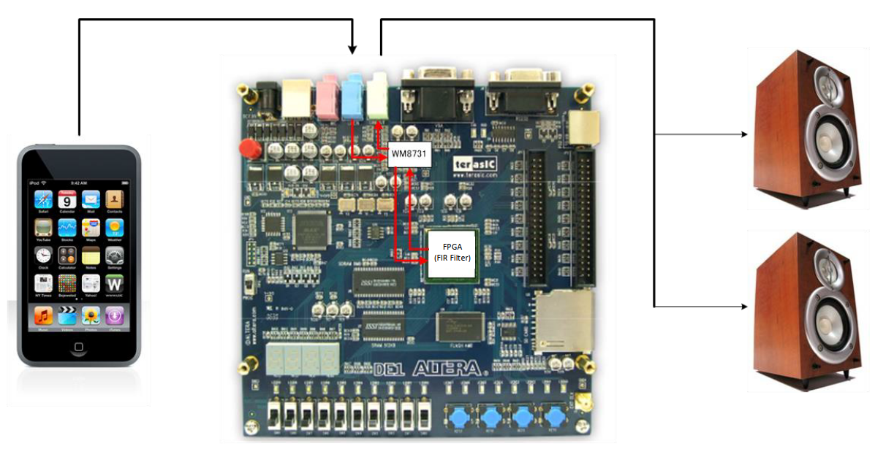
โจทย์แบบนี้มีแนวทางหลัก ๆ อยู่สองแบบ:
- ใช้ software — รับข้อมูลเสียงเข้า PC หรือ MCU แล้วคำนวณก่อนส่ง output ออกมา
- ใช้ FPGA — สร้าง datapath สำหรับคำนวณใน hardware แล้วส่ง output ออกมา
ในทางปฏิบัติยังมีตัวเลือกอย่าง DSP chip หรือ ASIC ด้วย แต่บทความนี้จะโฟกัสการเปรียบเทียบระหว่าง general-purpose processor กับ FPGA เท่านั้น
ด้วยเงื่อนไข real-time ดังนั้นข้อกำหนดของสองแนวทางจะเหมือนกัน คือการคำนวณของแต่ละ sample ต้องเสร็จก่อนที่ sample ถัดไปจะมาถึง สำหรับ sample rate 44.1 kHz เวลาต่อ sample คือ การคำนวณต้องเสร็จภายใน 1 / 44,100 ≈ 22.68 µs เพราะว่า ถ้าประมวลผล sample ปัจจุบันไม่ทัน ก็จะเริ่มรับ sample ถัดไปไม่ทันตามไปด้วย ใน PC ทั่วไป งานระดับนี้มักไม่ใช่ปัญหา แต่ MCU ขนาดเล็กหรือระบบที่มีงานอื่นทำพร้อมกันอาจต้องดูดีๆ ส่วนกรณีศึกษานี้จะเลือกเดินสาย FPGA ดังนั้น spec เราจะเป็น
| รายการ | ค่า |
|---|---|
| Audio codec | Wolfson WM8731 |
| Filter | FIR, 128 taps |
| Numeric format | IEEE 754 single-precision floating point (float32) |
| Sample rate | 44.1 kHz |
| Channels | Stereo, Left/Right |
2 Design Requirements
ระบบตัวอย่างเป็น digital audio filter โดย FPGA รับข้อมูลจาก WM8731 ซึ่งเป็น audio CODEC ที่มีทั้ง ADC และ DAC จากนั้นจะทำการคำนวณ FIR แยกสำหรับช่อง Left และ Right ในกรณีนี้จะใช้ flow แบบ fixed-point → float32 → FIR → fixed-point (แม้ว่า fixed-point จะเป็นตัวเลือกที่พบได้บ่อยกว่าใน audio DSP จริงก็ตาม)
| หมวด | รายการ | ค่า/ข้อกำหนด |
|---|---|---|
| Digital audio I/O | Resolution | 24-bit |
| จำนวนช่องสัญญาณ | 2 channels (Left / Right) | |
| Sample rate | 44.1 kHz | |
| รูปแบบข้อมูล | Stereo | |
| WM8731 clock | MCLK | 11.2896 MHz (= 256 × Fs) |
| WM8731 control | Control interface | I²C |
| WM8731 audio | Digital audio interface | เลือกใช้ DSP/PCM mode |
| FIR | Structure | Direct-form convolution |
| จำนวน taps | 128 | |
| Numeric format | IEEE 754 single-precision floating point, 32-bit |
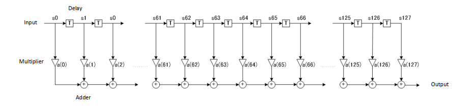
3 การออกแบบ
3.1 Overview
จาก requirement ด้านบน เราสามารถแบ่งระบบออกเป็น 3 block หลัก:
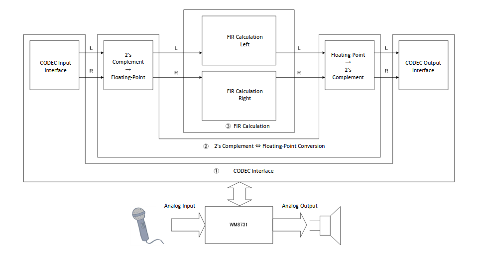
- CODEC Interface — จัดการ I²C สำหรับตั้งค่า register ตอนเริ่มระบบ และจัดการ digital audio interface สำหรับรับ/ส่ง sample (สัญญาณเสียง)
- Fixed-point ⇔ Floating-point Conversion — แปลง sample จาก CODEC เป็น float32 ก่อนเข้า FIR และแปลงกลับเป็น fixed-point ก่อนส่งให้ DAC
- FIR Calculation — คำนวณ FIR 128 taps โดยมี Datapath ของ Left และ Right แยกกัน
3.2 Clock domain
ในที่นี้จะให้ FPGA ใช้ system clock 50 MHz และใช้ PLL สร้าง clock สำหรับ CODEC ดังนี้:
| Clock domain | ความถี่ | ใช้งานกับ |
|---|---|---|
| System clock | 50 MHz | Conversion และ FIR core |
| CODEC MCLK | 11.2896 MHz | Master clock/reference ของ WM8731 |
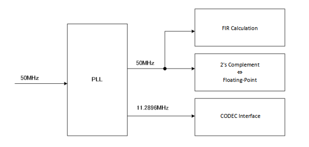
11.2896 MHz / 256 = 44.1 kHzอัตราส่วน 256 × Fs เป็นหนึ่งใน clocking configuration ที่ WM8731 รองรับสำหรับ 44.1 kHz
3.3 CODEC Interface (WM8731)
ในตัวอย่างนี้ให้ WM8731 ทำหน้าที่เป็น ADC/DAC:
- ฝั่ง ADC แปลงสัญญาณ analog จาก
LLINEIN/RLINEINเป็น digital sample - ฝั่ง DAC แปลง digital sample จาก FPGA กลับเป็น analog ที่
LOUT/ROUT
WM8731 มี interface ที่เกี่ยวข้องอยู่สองส่วน:
- I²C control interface — ใช้เขียน/อ่าน register เพื่อกำหนดค่า เช่น audio format, word length, sample-rate mode และ master/slave mode โดยทั่วไปจะทำตอน startup
- Digital audio interface — ใช้รับส่งข้อมูล audio sample ระหว่าง WM8731 กับ FPGA อย่างต่อเนื่อง โดยมีสัญญาณ clock และ frame-sync ที่เกี่ยวข้อง เช่น
BCLK,ADCLRC/DACLRCและADCDAT/DACDAT
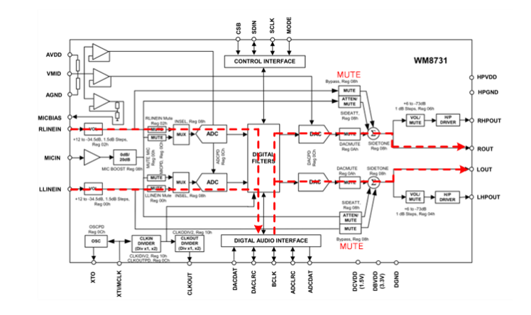
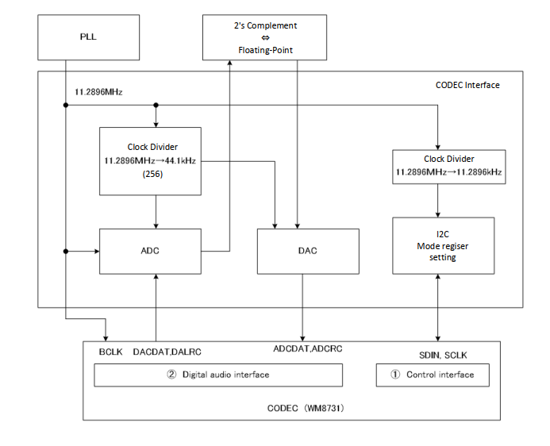
3.4 Fixed-point ⇔ Floating-point conversion
ด้วย spec WM8731 นั้นจะส่งข้อมูล audio เป็น signed fixed-point 24-bit ส่วน FIR core ในตัวอย่างนี้ใช้ float32 จึงต้องมีการแปลงจาก fixed-point 24-bit ไปเป็น floating point ก่อน และแน่นอนตอนส่งกลับไปที่ WM8731 ก็ต้องแปลงกลับไปเป็น fixed-point 24-bit เช่นกัน
ในที่นี้จะทำแบบ fixed-point 24-bit → fixed-point 64-bit (integer 32-bit, fractional 32-bit) → floating point
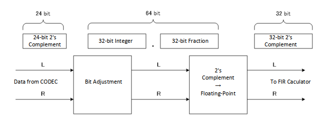
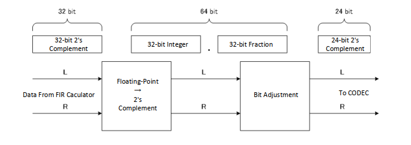
3.5 FIR Calculation
FIR filter นั้นสามารถคำนวณได้ตามสมการ:
y[n] = Σ(k=0..127) a[k] × s[n-k]โดย a[k] คือ coefficient และ s[n-k] คือ sample ปัจจุบันกับ sample ก่อนหน้า
จากสูตรนี้ เราแบ่งการคำนวณออกเป็นสองขั้น คือ คูณให้เสร็จทั้งหมดก่อน แล้วค่อยนำผลมาบวกรวมทีหลัง เหตุผลคือการคูณ a × s ของแต่ละ tap เป็นงานอิสระต่อกัน จึงสามารถนำ multiplier มาต่อเป็น pipeline ได้ ในทางกลับกัน adder แบบสะสมผลต้องรอผลรวมก่อนหน้าเสมอ
ถ้าคูณแล้วบวกสะสมไปทีละคู่ เราจะต้องรอผลรวมจากรอบก่อนหน้าทุกครั้ง ทำให้ pipeline ทำงานได้ไม่เต็มที่ ดังนั้นในกรณีนี้จึงเลือกคำนวณผลคูณของทุก tap ให้ครบก่อน แล้วค่อยนำผลลัพธ์มารวมในขั้นถัดไป
a0*s0 = result1
result1 + a1*s1 = result2 ← ต้องรอ result1 ก่อน (เสียเวลารอผล)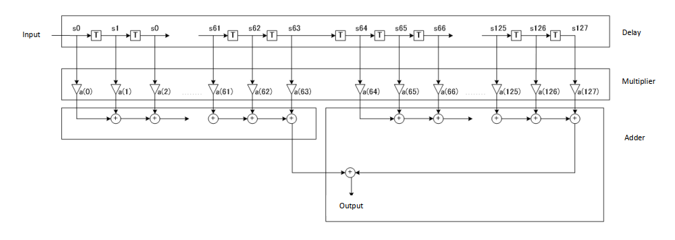
กลับมาที่โครงสร้าง block design เราสามารถแบ่งออกเป็น block หลักได้แก่ Delay, Multiplier และ Adder และจะใช้ Block RAM ใน FPGA ไว้เก็บ sample, coefficient รวมถึงผลการคูณระหว่างทาง (s[n-k] × a[k])
ทั้ง Left และ Right ใช้โครงสร้างเดียวกัน โดยมีส่วนหลักดังนี้:
- Delay line (
SAMP_RAM) — เก็บ sample ย้อนหลังs[n]ถึงs[n-127]ด้วย circular buffer - Coefficient storage — เก็บค่า
a[0]ถึงa[127]ใน ROM หรือ RAM ตามความต้องการ - Multiply — คำนวณ
s[n-k] × a[k]โดยในกรณีนี้ใช้ multiplier แบบ pipeline 1 ชุด และ reuse multiplier นี้กับทุก tap - Accumulation — รวมผลคูณทั้งหมดให้ได้
y[n]
ผลคูณที่ได้จะถูกเก็บแยกเป็น 2 กลุ่ม กลุ่มละ 64 ค่า จากนั้นใช้ accumulator สองสายคำนวณผลรวมของแต่ละกลุ่มแบบขนาน แล้วนำผลรวมทั้งสองมาบวกกันเป็น output สุดท้าย วิธีนี้ช่วยลดจำนวน multiplier และ DSP block เมื่อเทียบกับการสร้าง multiplier ครบ 128 ชุด ขณะเดียวกันก็ยังแบ่งงาน accumulation ให้ทำงานขนานกันได้
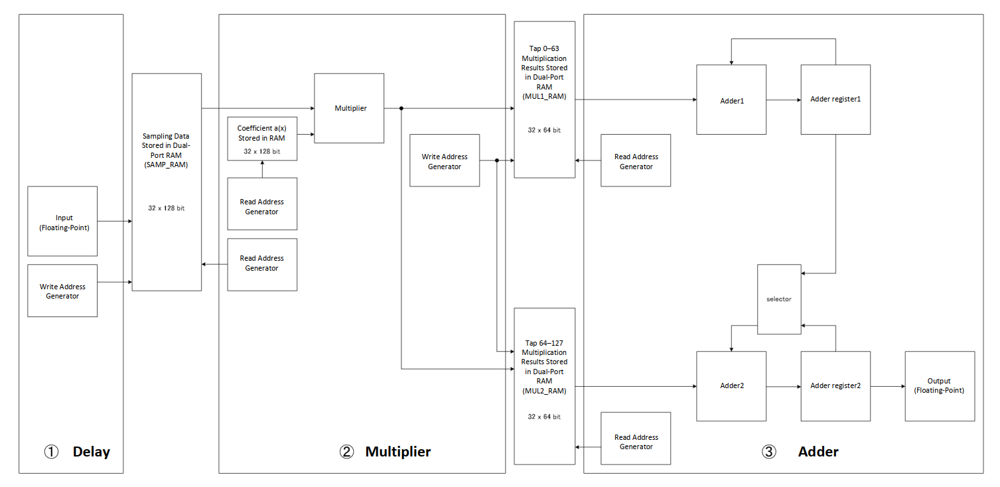
3.6 ประเมินความสามารถด้าน real-time
ในระบบนี้เราใช้ system clock ที่ 50 MHz ดังนั้นเมื่อรับ sample เข้ามาแล้ว การคำนวณ FIR ต้องทำให้เสร็จภายในเวลา 1 / 44,100 ≈ 22.68 µs ซึ่งเมื่อแปลงเป็นจำนวน clock cycle จะได้
50,000,000 / 44,100 ≈ 1,133.8 cyclesดังนั้นในการประเมินแบบคร่าว ๆ เราจะกำหนด timing budget ให้การคำนวณของแต่ละ sample ต้องเสร็จภายใน 1,133 clock cycles เพื่อให้ทันก่อน sample ถัดไปเข้ามา ดังนั้นเราสามารถประเมินแบบคร่าวๆ ได้ดังนี้:
| ขั้นตอน | Latency โดยประมาณ | หมายเหตุ |
|---|---|---|
| Multiplier 128 taps | 133 cycles | 128 cycles สำหรับป้อนข้อมูล + pipeline drain 5 cycles |
| Adder | 576 cycles | 64 × 9 cycles โดยใช้ Adder 2 สายขนาน |
| Final add + control overhead | 20 cycles | ตอนนี้เผื่อ overhead ไปก่อน ของจริงอาจจะต้องดู final design อีกที |
| รวม | 729 cycles |
จากการประเมินบนกระดาษ ขั้นตอนคำนวณทั้งหมดน่าจะใช้ประมาณ 729 cycles ซึ่งอยู่ภายใน timing budget ที่กำหนดไว้ 1,133 cycles ต่อ sample ดังนั้น เราสรุปได้ว่า design นี้น่าจะทำงานแบบ real-time ได้
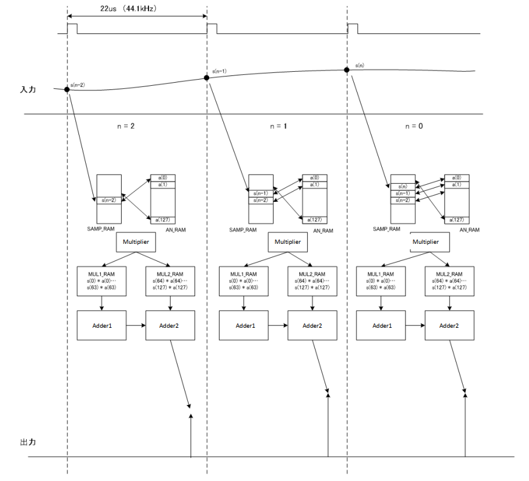
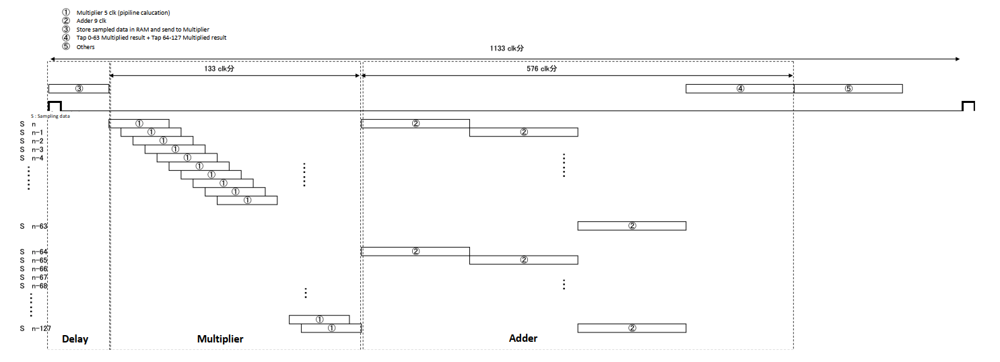
ค่า latency 5 และ 9 cycles ในตัวอย่างเป็นค่าที่สมมติขึ้นเพื่อสาธิตวิธีประเมินเท่านั้น ใน hardware จริง latency และ initiation interval ของ floating-point multiplier/adder ขึ้นอยู่กับ IP core, target frequency, FPGA family และการตั้งค่า pipeline
3.7 สรุป
จากการประเมินบนกระดาษ การทำ FIR filter 128 taps ที่ 44.1 kHz บน FPGA มีความเป็นไปได้ เพราะ system clock 50 MHz มีประมาณ 1,133 cycles ต่อ sample และ estimate เบื้องต้นใช้ประมาณ 729 cycles แน่นอนว่านี่เป็นแค่การประเมินบนกระดาษ ขั้นตอนที่เหลือคือต้องลงลึกในการ coding จริง และเมื่อ code เสร็จแล้วต้องกลับมาตรวจสอบอีกครั้งว่า FPGA resource ที่ใช้จริงเพียงพอหรือไม่
เมื่อลงมือ implement บน FPGA แล้ว เรายังต้องตรวจสอบรายละเอียดต่อไปนี้อีกครั้ง:
- latency และ initiation interval ของ floating-point IP
- จำนวน DSP block, RAM และ logic ที่ใช้
- timing closure หลัง synthesis และ place-and-route
- การอ่านข้อมูลจาก RAM และการจัดการ circular buffer
- CDC ระหว่าง system clock กับ CODEC interface
- rounding, saturation และ clipping ตอนแปลงกลับเป็น 24-bit fixed-point
3.8 หมายเหตุ
ทำไมเลือกคำนวณด้วย floating-point :
การเลือก float32 มีเหตุผลหลักคือทำให้การเปรียบเทียบกับ reference model ใน C หรือ Python ตรงไปตรงมา และไม่ต้องอธิบาย fixed-point scaling ในบทความนี้มากเกินไป อย่างไรก็ตามการใช้ floating point ไม่ได้แปลว่าจะมี precision ดีกว่า fixed-point เสมอไป จุดเด่นหลักของ float คือมี dynamic range กว้างและจัดการค่าที่มี scale ต่างกันได้ง่ายกว่า ส่วน hardware cost, latency, power และ resource usage มักสูงกว่า fixed-point ดังนั้นงานจริงควรเปรียบเทียบทั้งสองแบบก่อนตัดสินใจ
แนวทางเร่งความเร็วเพิ่มเติมด้วย adder tree :
ในบทความนี้เลือกใช้ accumulator สองสายบวกสะสมทีละตัว (serial accumulate) เพื่อความเรียบง่ายของ control logic แต่ในทางปฏิบัติยังมีอีกแนวทางที่เร็วกว่า คือจัดกลุ่มผลคูณเป็นคู่ ๆ แล้วบวกแบบขนานในคราวเดียว เช่น (s0×a0)+(s1×a1), (s2×a2)+(s3×a3), ... เพราะแต่ละคู่เป็นอิสระต่อกัน ไม่ต้องรอผลจากคู่อื่นก่อน ซึ่งช่วยลดเวลาคำนวณของขั้นตอนบวกลงได้มากเมื่อเทียบกับ serial accumulate ที่ใช้ในตัวอย่างนี้
4 เพิ่มเติม : เมื่อไหร่ถึงจำเป็นต้องใช้ FPGA
กรณีศึกษาข้างต้นเป็นเพียงตัวอย่างประกอบเท่านั้น แต่ในงานจริง ก่อนจะตัดสินใจใช้ FPGA ในการคำนวณ ควรประเมิน workload, deadline, resource, power และความซับซ้อนของระบบก่อนเสมอ เพื่อตอบคำถามว่า “ใช้ได้ไหม” และ “ควรใช้ไหม” โดย
- งานที่ไม่มีข้อจำกัดด้าน real-time เช่น การแปลงไฟล์แบบโยนเข้าไปแล้วรอผลลัพธ์ (batch/offline processing) — ไม่จำเป็นต้องใช้ FPGA เพราะไม่มีเส้นตายเชิงเวลาต่อหน่วยข้อมูลที่ต้องรับประกัน
- งานที่ต้องทำให้เสร็จภายในเวลาที่กำหนดต่อเนื่อง (deterministic deadline ต่อ sample/event เช่นกรณี FIR filter ข้างต้น) — เป็นลักษณะงานที่ควรประเมินสถาปัตยกรรมระดับ block-level แบบนี้ก่อนเริ่มออกแบบ เพราะการรับประกันความแน่นอนของเวลาเป็นจุดเด่นของการใช้ FPGA มาคำนวณ
- งานที่ต้องทำหลาย operation พร้อมกัน — FPGA อาจเหมาะเมื่อสามารถใช้ parallelism และ pipeline เพื่อลดเวลาต่อข้อมูลได้จริง
- งานที่ต้องเชื่อมต่อกับ I/O เฉพาะทาง — FPGA อาจช่วยรวม interface และ datapath ไว้ใน hardware เดียว แต่ก็ต้องชั่งน้ำหนักกับ resource และเวลาในการพัฒนา
จะเห็นได้ว่าการใช้ FPGA ออกแบบงานลักษณะเดียวกันมักยุ่งยากกว่า software อยู่พอสมควร เพราะต้องคิดทั้งเรื่อง timing, FPGA resources, การจัดวางและการ route ของวงจร รวมถึงเส้นทางการเคลื่อนที่ของข้อมูลระหว่าง memory, datapath และ interface ต่าง ๆ จะเห็นได้ว่าการใช้ hardware คำนวณนั้น ไม่ได้จบแค่การเขียนสูตรคำนวณ แต่ต้องออกแบบว่าแต่ละส่วนจะทำงานเมื่อไหร่ ใช้ resource อะไร และส่งข้อมูลต่อกันอย่างไรด้วย